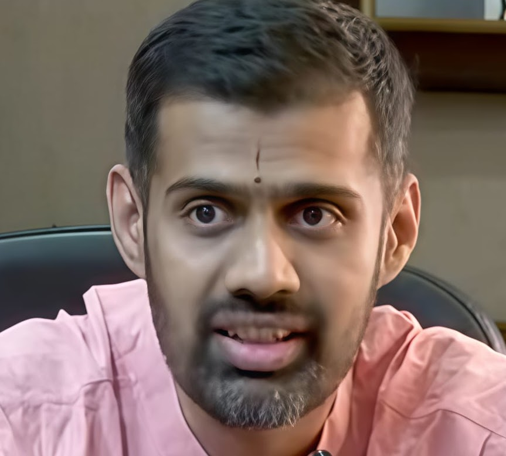

Assistant Professor · Dept. of ECE · Indian Institute of Science, Bengaluru
Co-Founder & Head of AI · LatentForce.ai
कुर्वन्नेवेह कर्माणि जिजीविषेच्छतं समाः Īśāvāsya Upaniṣad — "By action alone shall one aspire to live a hundred years."

Dr. Prathosh A.P. is an Assistant Professor in the Department of Electrical Communication Engineering at the Indian Institute of Science (IISc), Bengaluru, where he leads the Intelligent Systems Lab (ISL). His research asks a single central question: how can machine learning systems learn and be corrected reliably when data is scarce, noisy, or systematically biased?
Before joining IISc in September 2021, he was an Assistant Professor at IIT Delhi (2017–2021), and earlier held research positions at Xerox Research Centre India and Philips Innovation Labs. He received his Ph.D. from IISc in 2015 and B.E. from SJCE Mysore in 2011. He holds a concurrent appointment as Visiting Faculty at the Centre for Brain Research (CBR), IISc (March 2026).
He is a co-founder and Head of AI at LatentForce.ai, an IISc-FSID incubated AI startup (USD 1.7M seed, December 2025), and previously co-founded Cogniable, an AI-driven autism intervention platform acquired by Frontera Inc., USA (2024). He serves on the Committee for Responsible AI, Government of Karnataka (2026).
All conducted at IISc, September 2021 – May 2026.
Formalising label noise and spurious correlations as mathematical objects — controlled via submodular maximisation, DPP subset selection, and hypothesis-test-based data attribution. Spans LLM fine-tuning, drug response prediction, and anomaly detection.
Theoretically grounded concept removal across all major generative model families — GANs, diffusion models, and discriminative classifiers. The first unified programme providing formal guarantees for selective forgetting and black-box output filtering.
Recovering symmetry groups from data alone — from discrete permutation subgroups to continuous Lie groups — with invariance provably guaranteed by architectural construction. The most comprehensive data-driven symmetry discovery programme in the current literature.
Working natively in the complex fractional Fourier domain to overcome aliasing, limited expressiveness, and poor OOD generalisation in operator learning. Validated on zero-shot super-resolution, PDE solving, and real-time air quality forecasting across Indian cities (R² > 0.95).
Systematically reducing annotation requirements in medical AI — from full pixel labels to bounding boxes to fully self-supervised pretraining via diffusion. Each step formally justified and validated on public clinical benchmarks including histopathology, cell detection, and molecular generation.
₹25K/month top-up salary + ₹2.5 Lakhs/year research grant.
AI infrastructure for coding agents. The flagship product, LatentGraph, indexes entire codebases into queryable knowledge graphs — enabling structurally grounded context retrieval for AI agents.
Demonstrated outcomes: 50% lower agent token cost · 60% accuracy improvement · 40% faster turnaround on large codebases.
AI-driven assistive technology for early autism intervention. Served 1,000+ children across India in partnership with AIIMS Delhi, MAMC, and NIMHANS using video analytics and behaviour assessment algorithms.
Awards: UNICEF XTC EdTech Global Prize (Special Mention, 2022) · Winner, Govt. of India AI Startup Challenge · Winner, India Innovation Growth Programme 2.0.